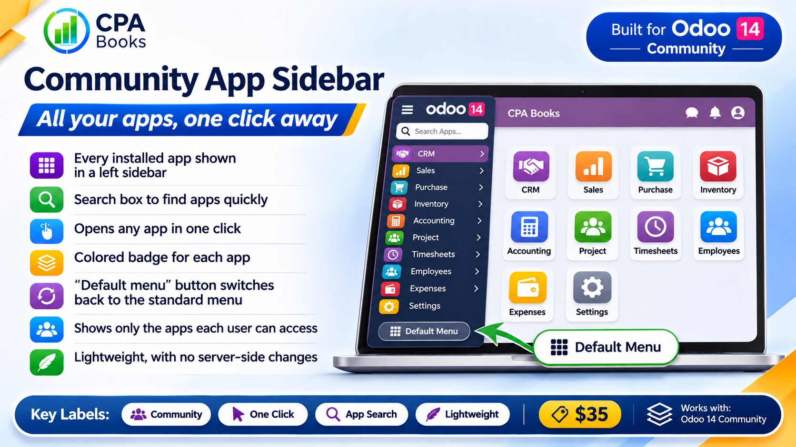
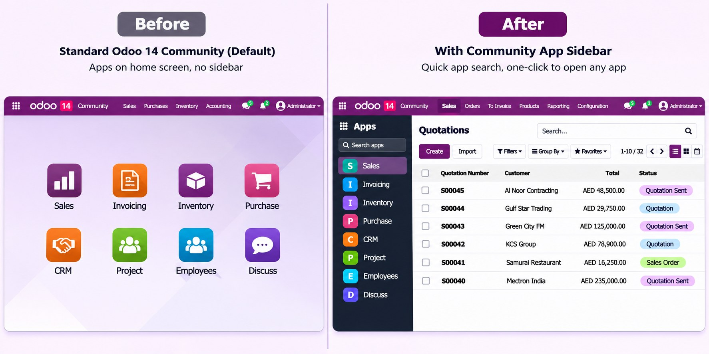
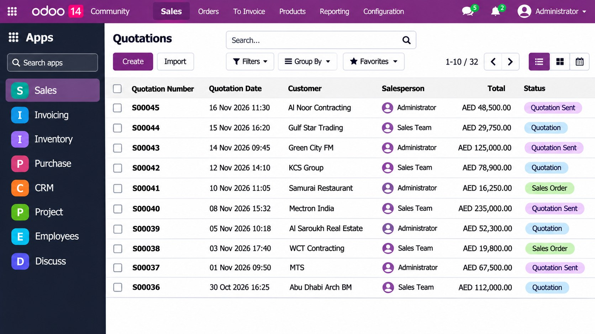
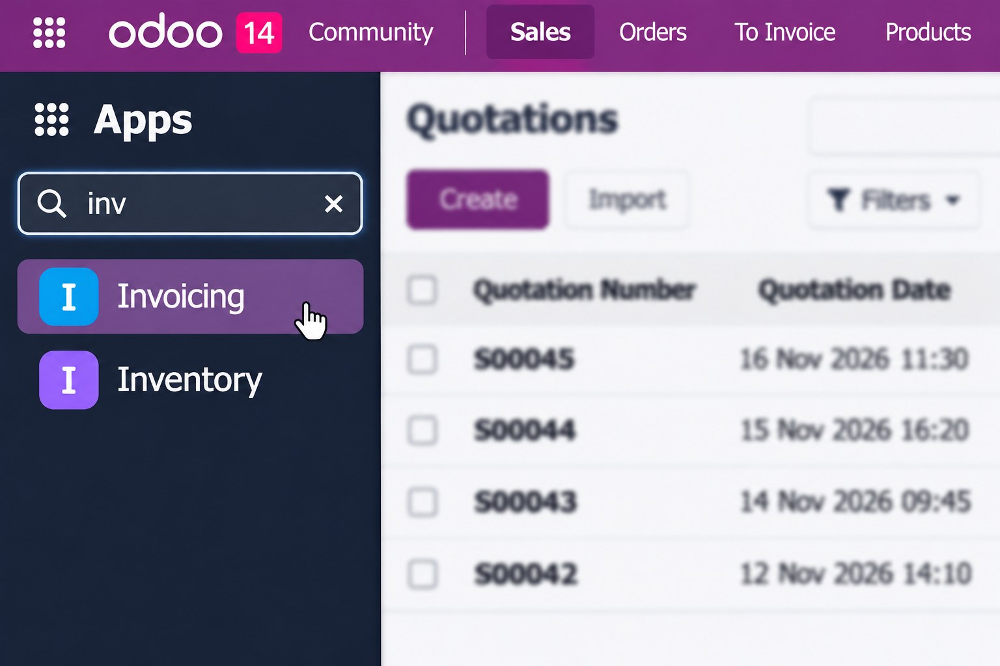
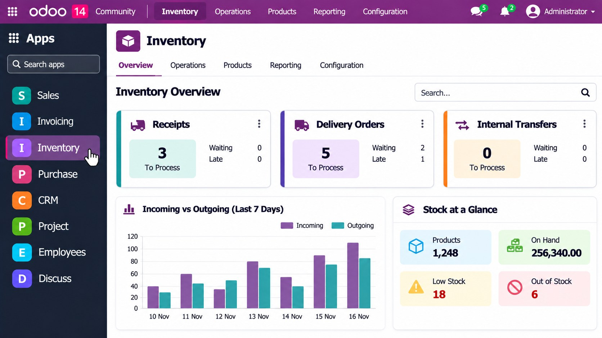
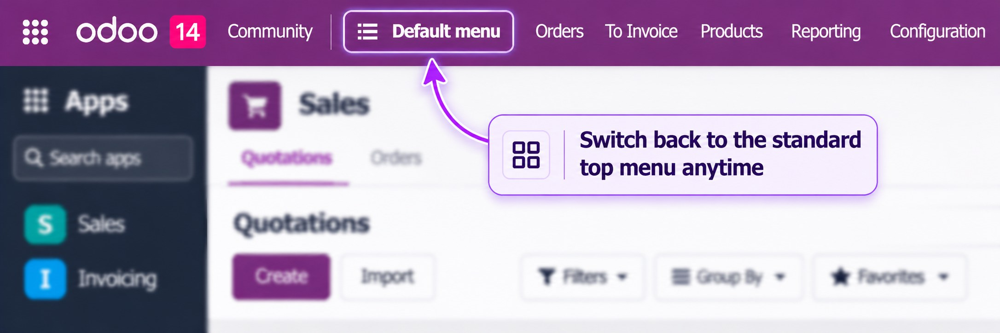

<div style="font-family:-apple-system,BlinkMacSystemFont,'Segoe UI',Roboto,Helvetica,Arial,sans-serif;color:#1B1530;background-color:#FFFFFF;padding:8px 4px 24px;line-height:1.55;">
<div style="max-width:1080px;margin:0 auto;">

<!-- ============ HERO (dark) ============ -->
<div style="background-color:#1B1530;border-radius:24px;padding:26px 26px 22px;margin:0 0 20px;">
<table width="100%" cellpadding="0" cellspacing="0" style="border-collapse:collapse;"><tr>
<td width="100" valign="middle" style="padding:0 18px 0 0;"><div style="background-color:#FFFFFF;border-radius:22px;padding:10px;width:76px;"></div></td>
<td valign="middle">
<div style="font-size:13px;font-weight:800;color:#C4A8FF;letter-spacing:1.5px;margin:0 0 2px;">CPA BOOKS · ODOO 14 COMMUNITY</div>
<div style="font-size:34px;line-height:1.1;font-weight:800;color:#FFFFFF;margin:0 0 6px;">Community App Sidebar</div>
<div style="font-size:16px;color:#CFC6E6;max-width:660px;">All your apps, one click away. A fast left sidebar with app search for the Odoo 14 Community web client.</div>
</td>
<td valign="top" align="right" style="white-space:nowrap;">
<span style="display:inline-block;background-color:#12B76A;color:#FFFFFF;border-radius:999px;padding:6px 14px;font-size:12px;font-weight:800;">Community</span>
</td>
</tr></table>
</div>



<!-- ============ BEFORE / AFTER ============ -->
<div style="text-align:center;margin:0 0 6px;"><span style="display:inline-block;background-color:#F1EAFE;color:#6D28D9;border-radius:999px;padding:5px 14px;font-size:12px;font-weight:800;letter-spacing:1px;">THE DIFFERENCE</span></div>
<div style="text-align:center;font-size:28px;font-weight:800;color:#1B1530;margin:0 0 4px;">Stop going back to the home screen</div>
<div style="text-align:center;font-size:15px;color:#64748B;margin:0 0 18px;">In standard Community you return to the app grid every time you switch apps. With the sidebar, every app stays one click away.</div>


<table width="100%" cellpadding="0" cellspacing="0" style="border-collapse:separate;margin:0 0 36px;"><tr>
<td width="50%" valign="top" style="padding:6px;"><div style="background-color:#F6F6F8;border-radius:16px;padding:16px 20px;">
<div style="font-size:13px;font-weight:800;color:#64748B;letter-spacing:1px;margin:0 0 4px;">BEFORE</div>
<div style="font-size:14px;color:#475569;">Home screen &#8594; pick app &#8594; work &#8594; back to home screen &#8594; pick next app</div>
</div></td>
<td width="50%" valign="top" style="padding:6px;"><div style="background-color:#F1EAFE;border-radius:16px;padding:16px 20px;">
<div style="font-size:13px;font-weight:800;color:#6D28D9;letter-spacing:1px;margin:0 0 4px;">AFTER</div>
<div style="font-size:14px;color:#1B1530;">Click any app in the sidebar. That's it.</div>
</div></td>
</tr></table>

<!-- ============ MAIN SCREEN ============ -->
<table width="100%" cellpadding="0" cellspacing="0" style="border-collapse:collapse;margin:0 0 12px;"><tr>
<td width="60" valign="top"><div style="background-color:#6D28D9;color:#FFFFFF;border-radius:14px;width:44px;height:44px;line-height:44px;text-align:center;font-size:20px;font-weight:800;">1</div></td>
<td valign="top"><div style="font-size:22px;font-weight:800;color:#1B1530;margin:0 0 2px;">Every app, always on the left</div>
<div style="font-size:15px;color:#475569;">The sidebar lists every app the user can access, each with a colored letter badge. The app you are in is highlighted, and your screen keeps its full working area.</div></td>
</tr></table>


<!-- ============ SEARCH + OPEN (side by side) ============ -->
<table width="100%" cellpadding="0" cellspacing="0" style="border-collapse:separate;margin:0 0 40px;"><tr>
<td width="50%" valign="top" style="padding:0 10px 0 0;">
<table width="100%" cellpadding="0" cellspacing="0" style="border-collapse:collapse;margin:0 0 10px;"><tr>
<td width="56" valign="top"><div style="background-color:#6D28D9;color:#FFFFFF;border-radius:14px;width:44px;height:44px;line-height:44px;text-align:center;font-size:20px;font-weight:800;">2</div></td>
<td valign="top"><div style="font-size:19px;font-weight:800;color:#1B1530;">Type to find</div>
<div style="font-size:14px;color:#475569;">Type a few letters in <strong>Search apps</strong>. It matches app names and the menus inside them.</div></td>
</tr></table>

</td>
<td width="50%" valign="top" style="padding:0 0 0 10px;">
<table width="100%" cellpadding="0" cellspacing="0" style="border-collapse:collapse;margin:0 0 10px;"><tr>
<td width="56" valign="top"><div style="background-color:#6D28D9;color:#FFFFFF;border-radius:14px;width:44px;height:44px;line-height:44px;text-align:center;font-size:20px;font-weight:800;">3</div></td>
<td valign="top"><div style="font-size:19px;font-weight:800;color:#1B1530;">Click to open</div>
<div style="font-size:14px;color:#475569;">One click opens the app. No trip back to the home screen.</div></td>
</tr></table>

</td>
</tr></table>

<!-- ============ DEFAULT MENU ============ -->
<table width="100%" cellpadding="0" cellspacing="0" style="border-collapse:collapse;margin:0 0 12px;"><tr>
<td width="60" valign="top"><div style="background-color:#6D28D9;color:#FFFFFF;border-radius:14px;width:44px;height:44px;line-height:44px;text-align:center;font-size:20px;font-weight:800;">4</div></td>
<td valign="top"><div style="font-size:22px;font-weight:800;color:#1B1530;margin:0 0 2px;">Prefer the classic menu? One click.</div>
<div style="font-size:15px;color:#475569;">The <strong>Default menu</strong> button in the top bar hides the sidebar and brings back the standard Community top menu. Click it again to return to the sidebar.</div></td>
</tr></table>


<!-- ============ FEATURE GRID (dark) ============ -->
<div style="background-color:#1B1530;border-radius:24px;padding:28px 22px 18px;margin:0 0 36px;">
<div style="text-align:center;font-size:26px;font-weight:800;color:#FFFFFF;margin:0 0 4px;">Small app, big time saver</div>
<div style="text-align:center;font-size:15px;color:#CFC6E6;margin:0 0 18px;">Everything it does, at a glance.</div>
<table width="100%" cellpadding="0" cellspacing="0" style="border-collapse:separate;"><tr>
<td width="33%" valign="top" style="padding:6px;"><div style="background-color:#2A2147;border-radius:16px;padding:18px;min-height:110px;"><div style="font-size:22px;">&#128203;</div><div style="font-size:16px;font-weight:800;color:#FFFFFF;margin:4px 0 2px;">All apps listed</div><div style="font-size:14px;color:#CFC6E6;">Every installed app in one list, in your menu order.</div></div></td>
<td width="33%" valign="top" style="padding:6px;"><div style="background-color:#2A2147;border-radius:16px;padding:18px;min-height:110px;"><div style="font-size:22px;">&#128269;</div><div style="font-size:16px;font-weight:800;color:#FFFFFF;margin:4px 0 2px;">Smart search</div><div style="font-size:14px;color:#CFC6E6;">Finds apps and the menus inside them as you type.</div></div></td>
<td width="33%" valign="top" style="padding:6px;"><div style="background-color:#2A2147;border-radius:16px;padding:18px;min-height:110px;"><div style="font-size:22px;">&#128194;</div><div style="font-size:16px;font-weight:800;color:#FFFFFF;margin:4px 0 2px;">Expandable menus</div><div style="font-size:14px;color:#CFC6E6;">Open an app's menus right in the sidebar and jump to any screen.</div></div></td>
</tr><tr>
<td width="33%" valign="top" style="padding:6px;"><div style="background-color:#2A2147;border-radius:16px;padding:18px;min-height:110px;"><div style="font-size:22px;">&#127912;</div><div style="font-size:16px;font-weight:800;color:#FFFFFF;margin:4px 0 2px;">Colored badges</div><div style="font-size:14px;color:#CFC6E6;">Each app gets a letter badge in its own color, easy to spot.</div></div></td>
<td width="33%" valign="top" style="padding:6px;"><div style="background-color:#2A2147;border-radius:16px;padding:18px;min-height:110px;"><div style="font-size:22px;">&#128274;</div><div style="font-size:16px;font-weight:800;color:#FFFFFF;margin:4px 0 2px;">Respects access rights</div><div style="font-size:14px;color:#CFC6E6;">Users only see the apps and menus they are allowed to open.</div></div></td>
<td width="33%" valign="top" style="padding:6px;"><div style="background-color:#2A2147;border-radius:16px;padding:18px;min-height:110px;"><div style="font-size:22px;">&#129718;</div><div style="font-size:16px;font-weight:800;color:#FFFFFF;margin:4px 0 2px;">Lightweight</div><div style="font-size:14px;color:#CFC6E6;">Only JavaScript and styles. No new database tables, no server changes.</div></div></td>
</tr></table>
</div>

<!-- ============ INSTALL ============ -->
<table width="100%" cellpadding="0" cellspacing="0" style="border-collapse:collapse;margin:0 0 36px;"><tr>
<td width="38%" valign="top" style="padding:0 18px 0 0;">
<div style="font-size:24px;font-weight:800;color:#1B1530;margin:0 0 6px;">Ready in under a minute</div>
<div style="font-size:15px;color:#475569;">No configuration. Install it and the sidebar is there for every user.</div>
</td>
<td width="62%" valign="top">
<table width="100%" cellpadding="0" cellspacing="0" style="border-collapse:separate;"><tr>
<td width="33%" valign="top" style="padding:4px;"><div style="border:2px solid #ECE6F7;border-radius:16px;padding:14px;text-align:center;min-height:84px;"><div style="font-size:24px;font-weight:800;color:#6D28D9;">01</div><div style="font-size:13px;color:#334155;">Install the app</div></div></td>
<td width="33%" valign="top" style="padding:4px;"><div style="border:2px solid #ECE6F7;border-radius:16px;padding:14px;text-align:center;min-height:84px;"><div style="font-size:24px;font-weight:800;color:#6D28D9;">02</div><div style="font-size:13px;color:#334155;">Reload the browser</div></div></td>
<td width="33%" valign="top" style="padding:4px;"><div style="border:2px solid #ECE6F7;border-radius:16px;padding:14px;text-align:center;min-height:84px;"><div style="font-size:24px;font-weight:800;color:#6D28D9;">03</div><div style="font-size:13px;color:#334155;">Click any app on the left</div></div></td>
</tr></table>
</td>
</tr></table>

<!-- ============ GOOD TO KNOW ============ -->
<div style="border:1px solid #ECE6F7;border-radius:18px;padding:6px 22px;margin:0 0 26px;">
<div style="padding:14px 0;border-bottom:1px solid #F1EDF8;"><div style="font-size:15px;font-weight:800;color:#1B1530;">Does it work on Odoo Enterprise?</div><div style="font-size:14px;color:#475569;">It is made for Odoo 14 Community. Enterprise already has its own home menu.</div></div>
<div style="padding:14px 0;border-bottom:1px solid #F1EDF8;"><div style="font-size:15px;font-weight:800;color:#1B1530;">Does it copy or need web_enterprise?</div><div style="font-size:14px;color:#475569;">No. It depends only on the standard <strong>web</strong> module and is built from scratch.</div></div>
<div style="padding:14px 0;"><div style="font-size:15px;font-weight:800;color:#1B1530;">Can I remove it later?</div><div style="font-size:14px;color:#475569;">Yes. Uninstall it and Odoo goes back to the standard menu. No data is changed.</div></div>
</div>

<table width="100%" cellpadding="0" cellspacing="0" style="border-collapse:separate;margin:0 0 24px;"><tr>
<td width="50%" valign="top" style="padding:6px;"><div style="background-color:#F1EAFE;border-radius:16px;padding:16px 20px;"><div style="font-size:15px;font-weight:800;color:#6D28D9;margin:0 0 2px;">Compatible with</div><div style="font-size:14px;color:#1B1530;">Odoo 14 Community</div></div></td>
<td width="50%" valign="top" style="padding:6px;"><div style="background-color:#F1EAFE;border-radius:16px;padding:16px 20px;"><div style="font-size:15px;font-weight:800;color:#6D28D9;margin:0 0 2px;">Depends on</div><div style="font-size:14px;color:#1B1530;">web</div></div></td>
</tr></table>

<!-- ============ SUPPORT ============ -->
<div style="background-color:#6D28D9;border-radius:20px;padding:28px 24px;color:#FFFFFF;text-align:center;">
<div style="font-size:22px;font-weight:800;margin:0 0 6px;">Need it styled to your brand?</div>
<div style="font-size:15px;color:#E9DDFF;margin:0 0 14px;">Contact the CPA Books Odoo team.</div>
<a href="mailto:info@cpabooks.org" style="display:inline-block;background-color:#FFFFFF;color:#1B1530;border-radius:999px;padding:10px 22px;font-size:14px;font-weight:800;text-decoration:none;margin:4px;">info@cpabooks.org</a>
<a href="https://www.cpabooks.co" style="display:inline-block;background-color:#1B1530;color:#FFFFFF;border-radius:999px;padding:10px 22px;font-size:14px;font-weight:800;text-decoration:none;margin:4px;">www.cpabooks.co</a>
</div>

</div>
</div>
